操作系统：期末复习
Last updated on January 9, 2026 pm
本文为 SJTU-CS3601 操作系统课程的期末复习，主要复习内容为操作系统概述、内存管理、进程管理、文件管理。
Lecture 1: 操作系统的演化
- 操作系统的功能：
- 从硬件角度：管理硬件、对硬件进行抽象
- 从应用角度：服务应用、管理应用
操作系统内核架构
-
宏内核：内核所有模块运行在内核态，具备直接操作硬件的能力
- 优点：
- 拥有丰富的沉淀和积累
- 内核各模块间可以相互调用，性能高
- 缺点：
- 安全性与可靠性问题：模块之间没有很强的隔离机制
- 实时性支持：系统太复杂导致无法做最坏情况时延分析
- 系统过于庞大而阻碍创新
- 向上向下的扩展：很难去剪裁/扩展一个宏内核系统支持从 KB 级别到 TB 级别的场景
- 硬件异构性：很难长期支持一些定制化的方式去解决一些特定问题
- 功能安全：无法通过汽车安全完整性认证
- 信息安全：单点错误会导致整个系统出错
- 确定性时延：目前依然不确定是否能支持确定性时延
- 优点：
-
微内核：
- 设计原则：最小化内核功能
- 将内核功能拆分到用户态，成为独立的“服务”
- 内核仅保留极少功能，为这些服务提供通信
- 优点：
- 易于扩展：直接添加一个用户进程即可为操作系统增加服务
- 易于移植：大部分模块与底层硬件无关
- 更加可靠：在内核模式运行的代码量大大减少
- 更加安全：即使存在漏洞，服务与服务之间存在进程粒度隔离
- 更加健壮：单个模块出现问题不会影响到系统整体
- 缺点：
- 性能较差：内核中的模块交互由函数调用变成了进程间通信
- 生态欠缺：尚未形成像 Linux 一样具有广泛开发者的社区
- 重用问题：重用宏内核操作系统提供兼容性，带来新问题
- 设计原则：最小化内核功能
-
外核：不提供硬件抽象；不管理资源，只管理应用
- 思想：应当由应用来尽可能地控制对硬件资源的抽象
- 设计：
- 将对硬件的抽象以库（LibOS）的形式提供，不同应用可使用不同的 LibOS
- 外核负责计算资源与应用的绑定与回收；保证多个应用之间的隔离
- 优点：
- OS 无抽象，能在理论上提供最优性能
- 应用对计算有更精确的实时等控制
- LibOS 在用户态更易调试，调试周期更短
- 缺点：
- 对计算资源的利用效率主要由应用决定
- 定制化过多，导致维护难度增加
-
多内核：通过多内核来管理异构多核设备
- 思路：
- 默认的状态是划分而不是共享
- 维持多份状态的 copy 而不是共享一份状态
- 显式的核间通信机制
- 设计：
- 在每个 core 上运行一个小内核
- OS 整体是一个分布式系统
- 应用程序依然运行在 OS 之上
- 思路：
Lecture 2: ARM 汇编基础
- 寄存器：
x1-x30是 31 个 64 位寄存器，w0-w30是其低位的 31 个 32 位寄存器
基础指令
- 寄存器之间的数据搬移：
mov dst, srcsrc：立即数或寄存器dst：寄存器
- 算术指令：

- 移位指令：
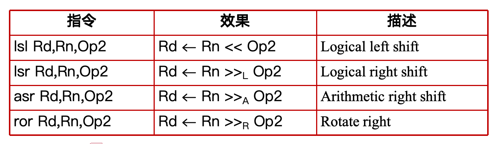
- 逻辑运算指令：
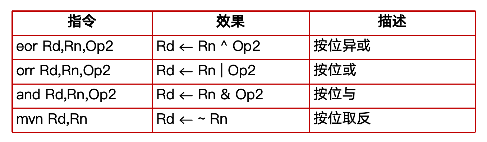
-
修改过的寄存器：对操作数进行移位或位扩展
- 对操作数进行移位：如
eor w0, w8, w8, asr #16 - 对操作数进行位扩展：如
add x19, x19, w0, sxtw- 无符号扩展：
uxtw,uxth,uxtb(Zero-extend single-word / half-word / byte) - 符号扩展：
sxtw,sxth,sxtb(Sign-extend single-word / half-word / byte)
- 无符号扩展：
- 对操作数进行移位：如
-
访存指令：

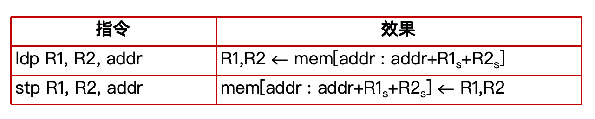
- 寻址模式：


分支指令
-
条件码：包含 N（Negative）、Z（Zero）、C（Carry）、V（Overflow）
- 设置：
- 带有 s 后缀的算术或逻辑运算指令（如
subs、adds） - 比较指令：
cmp(操作数之差)、cmn(操作数之和)、tst(操作数相与)cmp src1, src2：计算src1 - src2
- 带有 s 后缀的算术或逻辑运算指令（如
- 设置：
-
跳转条件：

-
跳转指令：
- 直接分支指令：以标签对应的地址作为跳转目标
- 无条件分支指令：
b <label> - 有条件分支指令：
bcond <label>，如beq、bne、ble
- 无条件分支指令：
- 间接分支指令：以寄存器中的地址作为跳转目标
br reg，如br x0
- 直接分支指令：以标签对应的地址作为跳转目标
-
for 循环翻译实例：
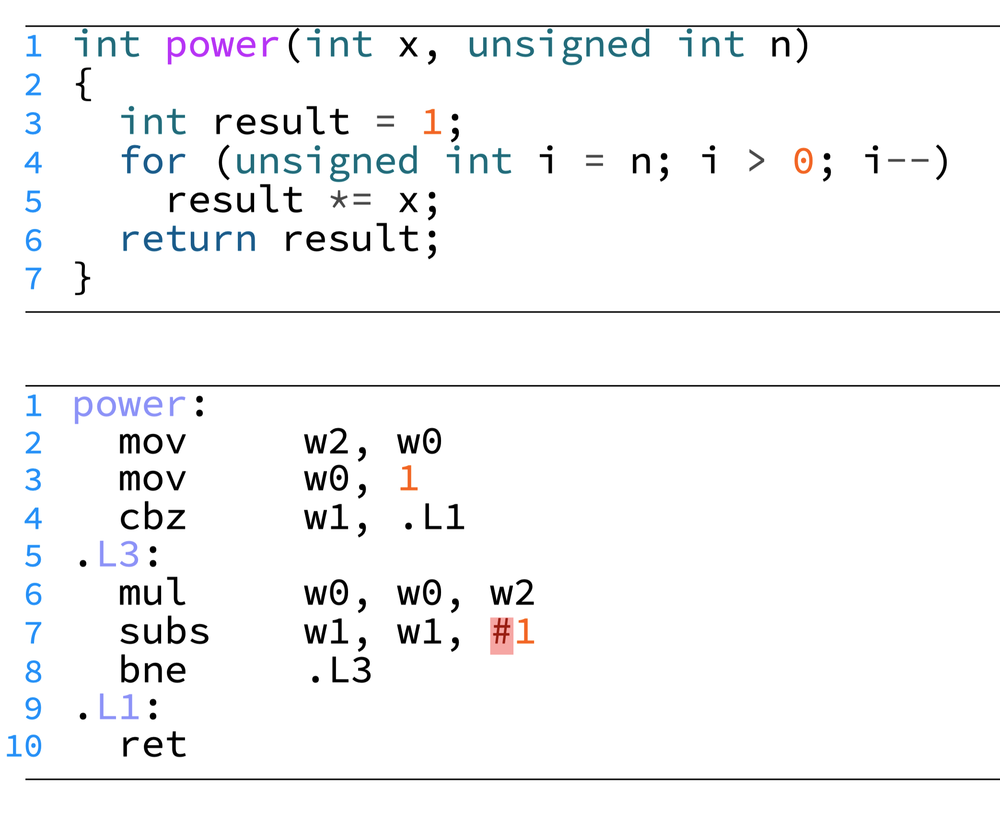
- while 循环翻译方法及实例：
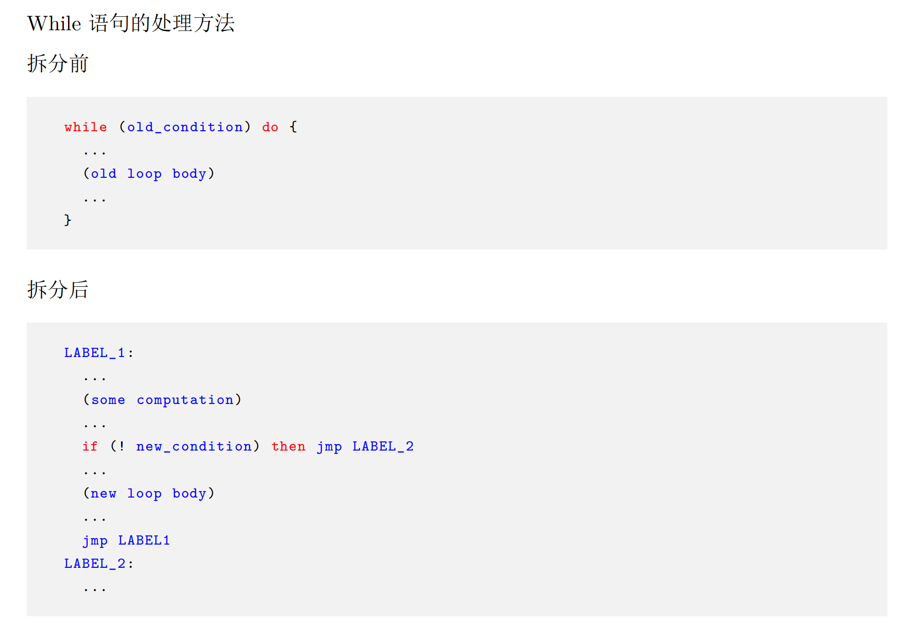

函数调用
- 函数调用指令：
bl label(直接调用，调用函数)blr Rn(间接调用，调用函数指针)- 功能：将返回地址存储在链接寄存器 LR (即
x30寄存器)，并跳转到被调用者的入口地址
- 函数返回指令：
ret(不区分直接调用与间接调用)- 功能：跳转到链接寄存器 LR 中的返回地址
- SP（Stack Pointer）寄存器：栈指针，指向栈顶（低地址）
- FP (Frame Pointer) 寄存器：帧指针，即
x29寄存器 - 标准的函数首尾操作：
1 | |
- 参数传递：
- 调用者使用
x0-x7寄存器传递前 8 个参数 - 第 8 个之后的参数，按声明顺序从右到左压到栈上，被调用者通过 SP + 偏移量访问
- 被调用者使用
x0寄存器传递返回值
- 调用者使用

- 寄存器保存：
- 调用者保存：
x9-x15- 调用者：在调用前按需进行保存，在返回后进行恢复
- 被调用者：可以随意使用
- 被调用者保存：
x19-x28- 被调用者：在使用前进行保存，在返回前进行恢复
- 调用者：这些寄存器的值在函数调用前后不会改变
- 调用者保存：
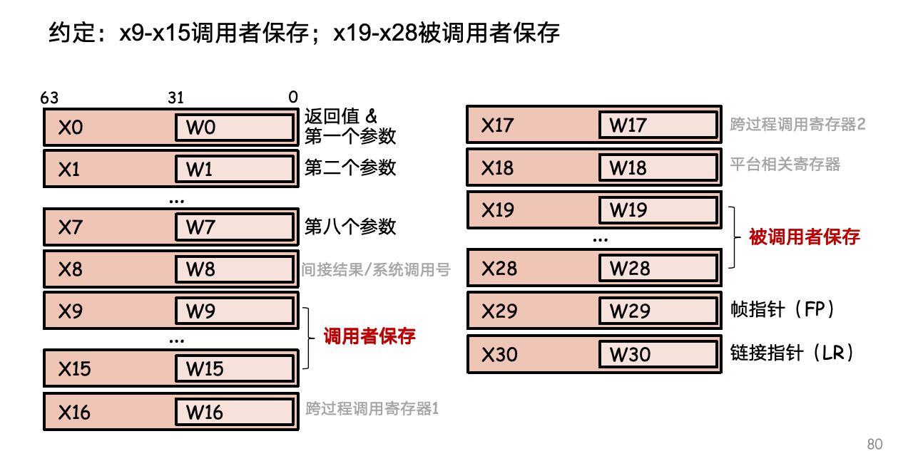
- 函数调用实例：

Lecture 3: ARM 汇编 - 系统 ISA
- 常见寄存器：
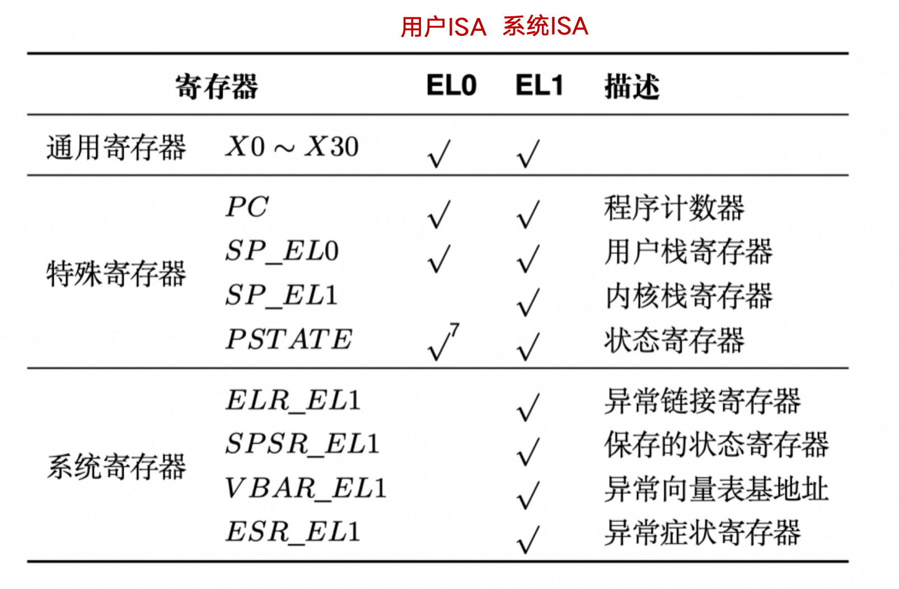
-
系统指令：
mrs/msr：从系统寄存器读取值/向系统寄存器写入值svc/eret：特权级切换和返回
-
特权级切换的时机：
- 同步异常：执行当前指令触发异常
- 第一类：用户程序主动发起系统调用（
svc指令） - 第二类：非主动，如用户程序意外访问空指针
- 第一类：用户程序主动发起系统调用（
- 异步异常：CPU 收到中断信号
- 从外设发来的中断，如屏幕点击、鼠标、收到网络包
- CPU 时钟中断，如定时器超时
- 同步异常：执行当前指令触发异常
特权级切换过程

-
处理器在切换过程中的任务：
- 将发生异常事件的指令地址保存在 ELR_EL1 中
- 将异常事件的原因保存在 ESR_EL1
- 将处理器的当前状态（即 PSTATE）保存在 SPSR_EL1
- 栈寄存器不再使用 SP_EL0（用户态栈寄存器），开始使用 SP_EL1
- 修改 PSTATE 寄存器中的特权级标志位，设置为内核态
- 找到异常处理函数的入口地址，并将该地址写入 PC，开始运行操作系统
-
操作系统在切换过程中的任务：将属于应用程序的 CPU 状态保存到内存中，用于之后恢复应用程序继续运行，包括：
- 通用寄存器
x0-x30 - 特殊寄存器，主要包括 PC、SP 和 PSTATE
- 系统寄存器，包括页表基地址寄存器等
- 通用寄存器
-
硬件操作的必要性：
- PC 寄存器的值必须由处理器保存：否则当操作系统开始执行时，PC 将被覆盖
- 栈的切换必须由硬件完成：否则操作系统有可能使用用户态的栈，导致安全问题
系统调用的优化
- vDSO：内核将一部分数据通过只读的形式共享给应用，允许应用直接读取
- Flex-SC：允许应用以“向某一块内存页写入请求”的方式发起系统调用，并通过轮询来等待系统调用完成
- 内核独占一个 CPU 核心，通过轮询来等待用户的请求，然后执行系统调用，并将返回值写入同一块内存页
- 如果只有一个核心，可以将轮询改成批处理，即应用程序一次发起多个系统调用请求，内核一次性将所有系统调用处理完
Lecture 4: 从应用视角看操作系统抽象
- 处理器上下文：
- 通用寄存器：所有（X0-X30）
- 特殊寄存器：SP_EL0 (栈寄存器)
- 系统寄存器：ELR_EL1（对应 PC）, SPSR_EL1（对应 PSTATE）
常见的进程接口
-
getpid()：返回调用进程的 PID- 语法：
pid_t getpid(void);
- 语法：
-
getppid()：返回父进程的 PID- 语法：
pid_t getppid(void);
- 语法：
-
exit()：终止进程并带上一个 status 状态- 返回值：无返回值
- 语法：
void exit(int status);
-
fork()：父进程创建新的子进程，调用一次返回两次- 返回值：子进程为 0，父进程为子进程 PID，出错为 -1
- 语法：
pid_t fork(void);
1
2
3
4
5
6
7
8
9
10
11
12
13
14#include "csapp.h"
int main()
{
pid_t pid;
int x = 1;
pid = Fork();
if (pid == 0) { /* child */
printf("child : x=%d\n", ++x);
exit(0);
}
/* parent */
printf("parent: x=%d\n", --x);
exit(0);
} -
execve()：加载文件并运行- 只调用一次，且永远不会返回（仅仅在运行报错的时候，返回调用程序）
- 返回值：成功（不返回），失败（-1）
- 语法：
int execve(const char *filename, const char *argv[], const char *envp[]);
-
waitpid()：等待子进程终止后，内核回收子进程- 返回值：成功（子进程 PID），出错（-1）
- 语法：
pid_t waitpid(pid_t pid, int *status, int options);- pid>0 ：等待集合中只有
pid子进程 - pid=-1：等待集合包括所有子进程
- options=0
- 挂起调用进程，等待集合中任意子进程终止
- 如果等待集合中有子进程在函数调用前已经终止，立刻返回
- 返回值是导致函数返回的终止子进程 pid
- 该终止子进程被内核回收
- status 指针带回被回收子线程的 exit 状态
- pid>0 ：等待集合中只有
-
进程的终止：进程终止后，内核不会立刻销毁该进程，而是以终止态存在，等待父进程回收
- 僵尸进程：终止状态下还未被回收的进程
- 如果父进程在自己终止前没有回收僵尸子进程，内核会安排 init 进程回收这些子进程
ELF 文件格式
- ELF 格式：可执行可链接格式

- ELF 头部：通常用于存元数据
- 节头部表：每一个节都有一个节头部（节头部表的一项）描述
- ELF 字符串表（.strtab）：记录一系列 C 风格字符串，表示符号名或节名
- 用以调试的节：
- .debug：调试符号表，包括变量、typedef、C 源文件
- .line：C 源文件的行数与 .text 节中指令的映射
- 代码和数据节：
- .text：代码
- .rodata：只读数据，包括不可修改的常量数据
char *str = "apple"中的"apple"存放在.rodata段char str2[] = "apple"中的"apple"存放在栈上
- .data：初始化的全局变量和静态变量
- .bss：未初始化的全局变量和静态变量（不占文件空间，运行时分配内存）
常见的文件接口
-
open()：打开文件，返回一个文件标识符（file descriptor, fd）- 应用只需要记录内核返回的文件标识符
- 语法：
int open(char *filename, int flags, mode_t mode); - 返回值：成功（新文件标识符），出错（-1）
-
close()：关闭文件- 内核把文件标识符返回到可用标识符池
- 语法：
int close(int fd); - 返回值：成功（0），失败（-1）
-
read()：读文件，即从文件中复制m>0 个字节到内存中- 从当前文件的位置
k开始, 并更新k+=m - 如果从
k开始到文件末尾的长度小于m，触发 EOF - 语法：
ssize_t read(int fd, void *buf, size_t count); - 返回值：成功（读到字节数），遇到 EOF（0），失败（-1）
- 从当前文件的位置
-
write()：写文件- 语法：
ssize_t write(int fd, const void *buf, size_t count); - 返回值：成功（写入字节数），失败（-1）
- 语法：
Lecture 5: 内存地址翻译
- 页表：记录虚拟页号到物理页号的映射
- 存储在物理内存中，由 OS 负责维护
- 其起始地址存放在页表基地址寄存器中
- 64 位虚拟地址解析:
- [63:48] 16-bit：全 0（应用程序地址）或全 1（内核地址）
- [47:39] 9-bit：0 级页表索引
- [38:30] 9-bit：1 级页表索引
- [29:21] 9-bit：2 级页表索引
- [20:12] 9-bit：3 级页表索引
- [11:0] 12-bit：页内偏移
- 页表基地址寄存器：TTBR0_EL1 和 TTBR1_EL1
- MMU 根据虚拟地址第 63 位选择使用哪一个
- 应用程序（地址首位为 0）使用 TTBR0_EL1，操作系统（地址首位为 1）使用 TTBR1_EL1
- 页表大小：每个页表页占用一个物理页，对 64 位的地址空间：
- 页大小为 4K
- 每个页表页中有 512 个页表项
- 页表项为 8 字节
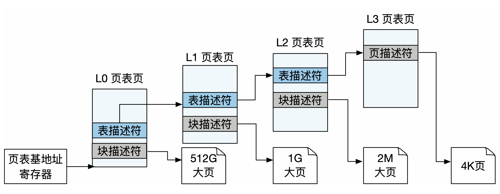
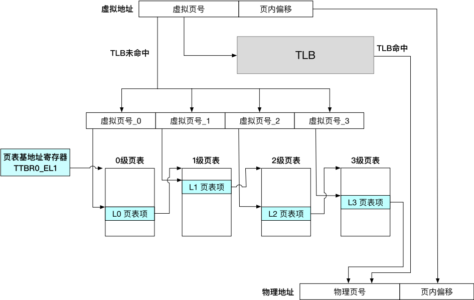
- 页描述符 / 表描述符 / 块描述符：PFN，即物理页号
- 页描述符指向 4K 页，表描述符指向下一级页表，块描述符指向大页
- 有效的 0-2 级页表项，第 1 位为 0 表示 PFN 指向大页，第 1 位为 1 表示 PFN 指向下一级页表
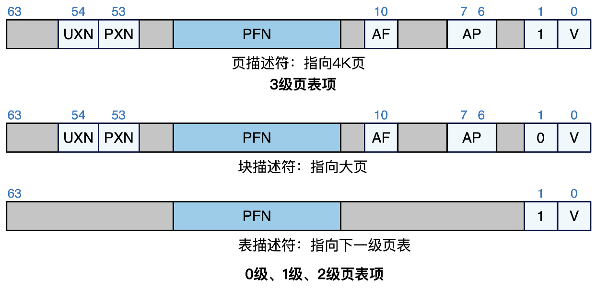
-
大页的优缺点：
- 好处：
- 减少 TLB 缓存项的使用，提高 TLB 命中率
- 减少页表的级数，提升遍历页表的效率
- 弊端：
- 未使用整个大页而造成物理内存资源浪费
- 增加管理内存的复杂度
- 好处：
-
TLB：位于 CPU 内部，是页表的缓存，用于加速地址翻译
- TLB 刷新：由于 TLB 使用虚拟地址索引，当切换进程页表时需要全部刷新
- 避免 TLB 刷新的方法：为不同进程分配 ASID（地址空间标识），TLB 的每一项也会缓存 ASID
Lecture 6: 系统初始化
- 内核启动的 3 个主要任务：
- 设置 CPU 异常级别为 EL1
- 设置页表并开启虚拟内存机制
- 设置异常向量表
- 每个异常向量表项跳转到对应的异常处理函数
- 处理异常前保存进程上下文、返回进程前恢复其上下文
页表初始化
- 设置 TTBR0 页表：将低地址虚拟内存映射到物理内存，使当前低地址代码能正常运行
- 设置 TTBR1 页表：将高地址虚拟内存映射到物理内存，使得内核能切换到高地址运行
- 将页表的物理地址写入 TTBR0 和 TTBR1
- TTBR0_EL1：虚拟地址 = 物理地址
- TTBR1_EL1：虚拟地址 = 物理地址 + OFFSET
- 将 SCTLR_EL1 的某些位置 1，开启页表
Lecture 7: 操作系统管理页表映射
-
直接映射：虚拟地址 = 物理地址 + 固定偏移
- 内核页表使用，映射全部物理内存，在启动时填写
- 好处：能在内核地址空间中很方便地在物理地址和虚拟地址之间进行转换
-
立即映射：在初始化虚拟地址空间时，直接在进程页表中添加各虚拟内存区域的映射
- 在进程运行期间，OS 接收到创建虚拟内存区域的请求后，立刻在页表中为该区域中添加映射
- 问题：物理内存资源浪费、非必要时延
-
延迟映射：先记录为进程分配的虚拟内存区域，但不分配物理内存
- 当进程实际访问某个虚拟页时，CPU 触发缺页异常，OS 在缺页异常处理函数中添加映射
- VMA (
vm_area_struct) 结构体：Linux 中记录进程已分配的虚拟内存区域，通过平衡树数据结构组织

- VMA 的添加时机：
- 创建进程时分配：数据（对应 ELF 段）、代码（对应 ELF 段）、栈（初始无内容）
- 进程运行时添加：堆、栈、分配内存缓冲区、加载新的代码库
- 根据 VMA 判断缺页异常的合法性:
- 导致缺页异常的三种可能：访问非法虚拟地址、按需分配、内存页被换出到磁盘上
- OS 的判断步骤：
- 根据 ESR_EL1 判断是否为缺页异常
- 从 FAR_EL1 读取导致缺页异常的虚拟地址
- 若该地址不落在 VMA 区域内，则判定为非法访问，触发段错误
- 检查页表项是否为空，若为不为空，表明被换出，需要从磁盘中换回
- 反之，则分配物理页，并在页表中添加映射
- 优势：节约内存资源
- 劣势：缺页异常导致访问延迟增加
- 取得平衡的方式：采用预先映射策略、主动告知 OS 提前填写映射
-
改变虚拟内存区域的接口：
mmap()：新增一段虚拟内存区域，通常把一个文件映射到内存- 也可以不映射任何文件，仅仅新建虚拟内存区域（匿名映射）
brk()：扩大或缩小堆区域
-
虚拟内存扩展功能：
- 共享内存：可用于共享库、进程通信
- 写时拷贝（copy-on-write）：
- 实现：以只读的方式共享一段物理内存，在修改并触发访问权限异常时拷贝
- 优点：节约物理内存、性能加速（
fork）
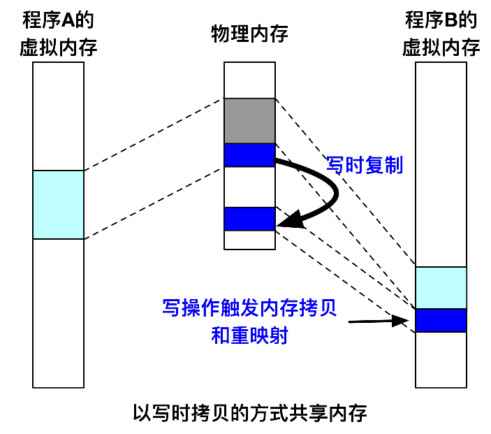
- 内存去重：OS 定期在内存中扫描发现具有相同内容的物理页面，执行去重
- 内存压缩：当内存资源不充足时，选择一些“最近不太会使用”的内存页进行数据压缩
Lecture 8: 物理内存管理
- 外部碎片与内部碎片：

伙伴系统
- 基本思想：将物理内存划分成连续的块，以块为基本单位进行分配
- 每个块都由一个或多个连续的物理页组成，物理页的数量必须是 2 的 n 次幂
- 维护一个空闲链表数组，空闲块按照大小放在相应的链表中
- 物理页/连续物理页的分配：当一个请求需要分配 个物理页时，伙伴系统将寻找一个大小合适的块
- 该块包含 个物理页，且满足
- 大的块可以分裂成两半，这两个小块互为伙伴
- 物理页/连续物理页的释放：分配器会找到其伙伴块
- 互为伙伴的两个块的物理地址仅有一位不同，而且块的大小决定是哪一位
- 若伙伴块也处于空闲状态，则将这两个伙伴块进行合并，形成一个大一号的空闲块


- 资源利用率：外部碎片程度降低；内部碎片依然存在
- 分配性能：分配和合并的时间复杂度均为常数时间
SLUB 分配器
-
目标：快速分配小内存对象，因为内核中的数据结构大小远小于 4K（例如 VMA）
-
SLUB 分配器的思路：OS 频繁分配的对象大小相对比较固定；避免外部碎片
- 从伙伴系统获得大块内存（名为 slab）
- 对每份大块内存进一步细分成固定大小的小块内存进行管理
- 块的大小通常是 个字节（一般来说，）
-
SLUB 设计：对于每个固定块大小，SLUB 分配器都会使用独立的内存资源池进行分配（采用 best fit 定位资源池）
- 1. 初始化资源池：把从伙伴系统得到的连续物理页划分成若干等份（slot）
- 2. 空闲链表：采用空闲链表区分是否空闲
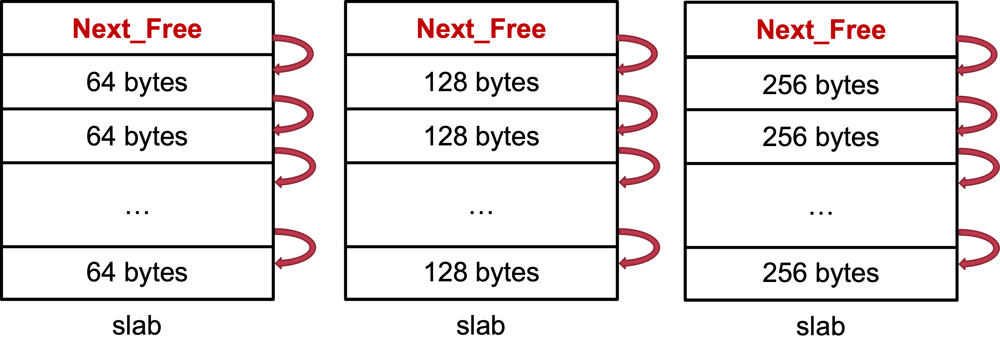
- 3. 分配与释放：
- 分配：
-
- 定位到大小最合适的资源池
-
- 从 slab 中取走
Next_Free指向的第一个 slot
- 从 slab 中取走
-
- 释放：将 Next_Free 指针指向待释放内存（slot）
- 如何找到
Next_Free：根据待释放内存地址和 slab 大小，计算 slab 起始地址 - 在物理页结构体中要记录所属 slab 信息
- 如何找到
- 分配：
- 4. 新增 slab：当某个资源池中的 slab 已经分配完，再从伙伴系统分配一个slab
- 5. 资源池内组织多个 slab：每种 slot 大小维护两个指针
Current指向一个 slab，并从其中分配- 当
Currentslab 全满，则从Partial链表中取出一个放入Current - 释放后，若某个 slab 不再全满，则加入
Partial - 释放后，若某个 slab 全空则可还给伙伴系统

- 优势：减少内部碎片、分配效率高（常数时间）
换页机制
- 换页机制的代价：
- 优势：突破物理内存容量限制
- 劣势：缺页异常+磁盘操作导致访问延迟增加
- 如何取得平衡：预取机制 （Prefetching），预测接下来进程要使用的页，提前换入
换页策略
- OPT 策略（理想）：优先换出未来最长时间内不会再访问的页面
- FIFO 策略：优先选择最先换入的页进行换出
- OS 维护一个队列，每换入一个物理页就把其页号加到队尾，因此最先换进的物理页号总是处于队头位置
- Second Chance 策略：FIFO 策略的改进版本，为每一个物理页号维护一个访问标志位
- 如果访问的页面号已经处在队列中，则置上其访问标志位
- 换页时查看队头：1）无标志则换出；2）有标志则去除并放入队尾，继续寻找
- LRU 策略：优先选择最久未被访问的页面
- OS 维护一个链表，在每次内存访问后，OS 把刚刚访问的内存页调整到链表尾端；每次都选择换出位于链表头部的页面
- 时钟算法策略：将换进物理内存的页号排成一个时钟的形状
- 有一个针臂，指向新换进内存的页号的后一个；同时，为每个页号维护一个访问位
- 当物理页被访问时， 把访问位设成 T
- 需要换页时，OS 从针臂所指的页号开始检查
- 如果是 T，则置成 F
- 如果是 F，则换出该页
- 实现：如何知道物理页被访问
- MMU 在页表项里为虚拟页打上“访问位”
- OS 在物理页的结构体中记录页表项位置（反向映射）
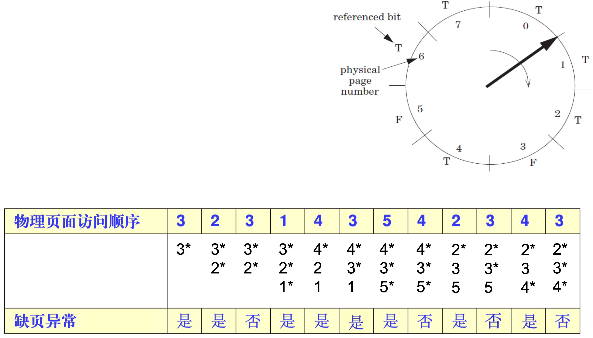
Lecture 9: 进程
-
进程控制块（PCB）：用于表示进程，存储在内核态
- 保存的信息包括：虚拟地址空间、处理器上下文、内核栈
- 进程标识符 PID、退出状态、子进程列表、执行状态
-
进程的退出与等待：
- 进程的退出：进程退出时，其上下文结构和虚拟地址空间会被销毁，但 PCB 和内核栈保留（处于僵尸状态）
- 进程的等待：父进程会等待子进程退出，记录子进程的退出状态，回收 PCB 并销毁内核栈
-
进程的五种典型执行状态：
- 新生（new）：正在初始化的进程
- 就绪（ready）：随时准备执行（但暂时没有执行）
- 运行（running）：正在执行
- 僵尸（zombie）：退出但未回收
- 终止（terminated）：退出且被回收

进程的创建
进程创建的过程
-
一、PCB 相关初始化：PCB 及其包含的内容都需要创建及初始化
- 分配 PCB 本身的数据结构
- 初始化虚拟内存：创建及初始化 vmspace 数据结构；分配一个物理页，作为顶级页表
- 初始化内核栈：分配物理页，作为进程内核栈
-
二、可执行文件加载：以 ELF 为例
- 从程序头部表可以获取需要的段所在位置
- 通常只有代码段和数据段需要被加载，即从 ELF 文件中映射到虚拟地址空间
-
三、准备运行环境：在返回用户态运行前，还需为进程准备运行所需的环境
- 分配用户栈：分配物理内存并映射到虚拟地址空间
- 准备程序运行时的环境：将参数和环境变量放到栈上
-
四、处理器上下文初始化：
- SP：设置为用户栈的栈顶地址（用户栈分配后才确定地址）
- PC：设置 ELR_EL1 寄存器（加载 ELF 才知道程序入口地址）
- PSTATE：设置 SPSR_EL1 寄存器
- 大部分寄存器初始值可直接赋为 0
Linux 的进程创建
-
fork()：- 实现：将父进程的 PCB 拷贝一份，包括虚拟内存、内核栈、处理器上下文等
- 优点：
- 接口非常简洁，（过去）实现简单
- 将进程创建和执行（
exec）解耦，提高了灵活度
- 缺点：
- 创建拷贝的复杂度与 PCB 复杂度相关，如今越来越复杂
- 完全拷贝过于粗暴（不如
clone） - 性能差、可扩展性差（不如
vfork和spawn） - 不可组合性（如
fork()+pthread()）
-
fork的替代接口：vfork：类似于fork，但让父子进程共享同一地址空间- 优点：连映射都不需要拷贝，性能更好
- 缺点：只能用在“
fork+exec”的场景中；共享地址空间存在安全问题
posix_spawn: 相当于fork+exec- 优点：可扩展性、性能较好
- 缺点：不如
fork灵活
clone:fork的进阶版，可以选择性地不拷贝内存- 优点：高度可控，可依照需求调整
- 缺点：接口比
fork复杂，选择性拷贝容易出错
进程切换
-
一、p0 进入内核态：由硬件完成部分寄存器保存
- PC 和 PSTATE 分别自动保存到 ELR_EL1 和 SPSR_EL1
-
二、p0 处理器上下文保存：将处理器中的寄存器值保存到处理器上下文对应的位置
-
三、由 p0 切换到 p1：
- 1. 虚拟地址空间切换：设置页表相关寄存器（TTBR0_EL1）
- 使用 PCB 中保存的页表基地址赋值给 TTBR0_EL1
- 2. 内核栈切换：设置内核中的栈寄存器 SP_EL1
- 使用 PCB 中保存的内核栈顶地址赋值给 SP_EL1
- 3. 进程上下文切换：设置
cur_proc为之后要执行的进程（p1）- 表明之后操作系统将以 p1 的身份运行
- 1. 虚拟地址空间切换：设置页表相关寄存器（TTBR0_EL1）
-
四、p1 处理器上下文恢复：从处理器上下文中加载各寄存器的值，放入对应寄存器中
-
五、p1 回到用户态：由硬件自动恢复部分寄存器
- 将 ELR_EL1 和 SPSR_EL1 中的值自动保存到 PC 和 PSTATE 中
Lecture 10: 线程
-
进程的问题：
- 创建进程的开销较大：包括了数据、代码、堆、栈等
- 进程的隔离性过强：进程间交互可以通过进程间通信（IPC），但开销较大
- 进程内部无法支持并行：单一进程无法充分利用多核资源
-
线程：更加轻量级的运行时抽象
- 只包含运行时的状态（主要是寄存器和栈），静态部分由进程提供
- 一个进程的多个线程可以在不同处理器上同时执行
- 调度和切换的基本单元由进程变成了线程
- 线程有自己的栈及内核栈，但数据、代码、堆等其他区域共享
-
线程的优势：
- 降低管理开销：从属于进程，创建和销毁时不涉及进程的所有内容
- 数据共享和同步方便：共享同一地址空间，可以直接读写彼此的数据，无需使用耗时的 IPC 机制
线程的基本操作
- 线程的创建：
pthread_create(&tid, attr, start_routine, arg)- 参数说明：
tid：返回子线程 IDattr：子线程属性，一般是NULLstart_routine：子线程起始执行点arg：子线程参数，即传入起始执行点函数的参数
- 主线程创建子线程后，两线程独立执行
- 参数说明：
- 线程的合并：
pthread_join(tid, &status)，等待tid对应线程执行完成，获取其执行结果并回收- 主线程需要手动调用来回收资源，否则可能出现资源溢出
- 线程的分离：
pthread_detach(tid)，使tid对应线程进入分离状态- 分离线程不能被其他线程杀死或回收，退出时资源自动回收
- 但是，分离线程并不完全独立，主线程调用
exit()仍会强制终止所有线程
- 线程的退出：
pthread_exit(status)，只退出当前线程（参数为返回值）- 使用
exit()会终结当前线程及所有子线程
- 使用
线程的实现
-
线程控制块 (TCB)：
- TCB 保存的信息：处理器上下文、所属进程、内核栈、退出/执行状态
- PCB 保存的信息：虚拟地址空间、PID、子进程列表、包含的线程列表及总数
-
线程创建：
- 1. TCB 相关内容初始化：创建新的 TCB、初始化内核栈、初始化处理器上下文（主要包括用户栈和 PC）
- 2. 维护进程/线程关系
- 3. 准备运行环境：设置参数
线程模型
-
线程的分类：
- 内核态线程：由内核创建并直接管理，内核维护其 TCB
- 内核态线程是内核进行调度的单位
- 用户态线程：由用户态的线程库创建并管理，对应的数据结构保存在用户态
- 内核不知晓该线程的存在，也不对其进行管理
- 内核态线程：由内核创建并直接管理，内核维护其 TCB
-
线程模型：表示了用户态线程与内核态线程之间的联系
- 多对一模型：多个用户态线程对应一个内核态线程
- 优点：内核管理简单
- 缺点：可扩展性差，无法适应多核机器的发展
- 在主流操作系统中被弃用，用于各种用户态线程库中
- 一对一模型：一个用户态线程对应一个内核态线程
- 优点：解决了多对一模型中的可扩展性问题
- 缺点：内核线程数量大，开销大
- 主流操作系统都采用一对一模型
- 多对多模型：多个用户态线程对应多个内核态线程
- 优点：解决了可扩展性问题（多对一）和线程过多问题（一对一）
- 缺点：管理更为复杂
- 在虚拟化中得到了广泛应用
- 多对一模型：多个用户态线程对应一个内核态线程

Lecture 11: 处理器调度
- 共用的调度指标：高资源利用率、多任务公平性、低调度开销
- 降低周转时间：任务第一次进入系统到执行结束的时间
- 降低响应时间：任务第一次进入系统到第一次给用户输出的时间
- 实时性：在任务的截止时间内完成任务
- 公平性：每个任务都应该有机会执行，不能饿死
- 开销低：调度器是为了优化系统，而非制造性能 BUG
- 可扩展：随着任务数量增加，仍能正常工作
经典调度策略 (Classical Scheduling)
1. 先到先得（First Come First Served, FCFS）
- 规则：按作业或进程到达的先后顺序进行服务
- 优点：
- 设计实现简单
- 对所有任务公平
- 问题：平均周转、响应时间过长
- 长短任务混合场景下，对短任务不友好
- 对 I/O 密集型任务不友好
2. 最短任务优先（Shortest Job First, SJF）
- 规则：运行时间最短的作业或进程优先得到服务
- 优点：平均周转时间短
- 问题：平均响应时间过长
- 对长任务不公平，可能饿死
- 必须预知任务执行时间
- 性能表现严重依赖任务到达时间点
3. 时间片轮转 (Round Robin, RR)
- 规则：
- 按照各进程到达就绪队列的顺序，轮流让各个进程执行一个时间片
- 若进程未在一个时间片内执行完，则剥夺 CPU，将进程重新放到就绪队列队尾重新排队
- 优点：
- 平均响应时间短
- 对所有任务公平
- 问题：
- 任务运行时间相似的场景下，平均周转时间长
- 时间片过短会导致调度开销过大
优先级调度策略 (Priority Scheduling)
4. 多级队列 (Multi-Level Queue, MLQ)
- 规则：
- 维护多个队列，每个对应静态设置好的优先级
- 高优先级的任务优先执行（高优先级空时，低优先级进程才能被调度）
- 同优先级内使用 Round Robin 调度（也可使用其他调度策略）
- 高优先级任务：
- I/O 密集型任务：为了更高的资源利用率
- 用户主动设置的重要任务
- 时延要求极高（必须在短时间内完成）的任务
- 优先级的动态调整：工作场景是动态变化的
- 静态设置的优先级可能导致：资源利用率低（优先级反转）、低优先级任务饥饿
- 问题：需要预知任务是否为 I/O 密集型任务
5. 多级反馈队列 (Multi-Level Feedback Queue, MLFQ)
- 规则：
- 优先级高的任务会抢占优先级低的任务
- 每个任务会被分配时间片，优先级相同的两个任务使用时间片轮转
- 任务被创建时，假设该任务是短任务，为它分配最高优先级
- 一个任务时间片耗尽后，它的优先级会被降低一级
- 如果一个任务在时间片耗尽前放弃 CPU，那么它的优先级不变
- 定时优先级提升：在某个时间段 S 后，将系统中所有任务优先级升为最高
- 避免长任务饿死、可以解决任务特征动态变化的场景
- 准确记录执行时间：任务放弃 CPU 后时间片不重置，当累计一个完整时间片被用完后，降低其优先级
- 为了应对抢占 CPU 时间的攻击
- 时间片长短的选择：
- 高优先级队列时间片较短（针对短任务），提升响应时间
- 低优先级队列时间片较长（针对长任务），降低调度开销
- 小结：
- 通过观察任务的历史执行，动态确定任务优先级
- 无需任务的先验知识
- 周转时间低、响应时间低、调度开销低
- 对于短任务，周转时间指标近似于 SJF
- 对于交互式任务，响应时间指标近似于 RR
- 可以避免长任务的饿死
- 通过观察任务的历史执行，动态确定任务优先级
6. 高响应比优先（Highest Response Ratio Next, HRRN）
- 规则：在每次调度时先计算各个任务的响应比，选择响应比最高的任务为其服务
- 响应比（Response Ratio）：一个任务的响应时间 与其运行时间 的比值
- 如果两个任务等待时间相同，则运行时间越短越优先
- 如果两个任务运行时间相同，则等待时间越长，越优先
- 优点：既可以让短任务优先执行，又不会让长任务产生饥饿
- 通过结合 FCFS 策略和 SJF 策略，避免了 SJF 策略在公平性方面的问题
公平共享调度策略 (Fair-Share Scheduling)
- 思想：每个用户占用的资源是成比例的，设定份额 (Share) 以确定相对比例
- 方法：使用 ticket 表示任务的份额， 表示 ticket 的总量
7. 彩票调度 (Lottery Scheduling)
- 规则：
- 每次调度时，生成随机数
- 根据 ，找到对应的任务
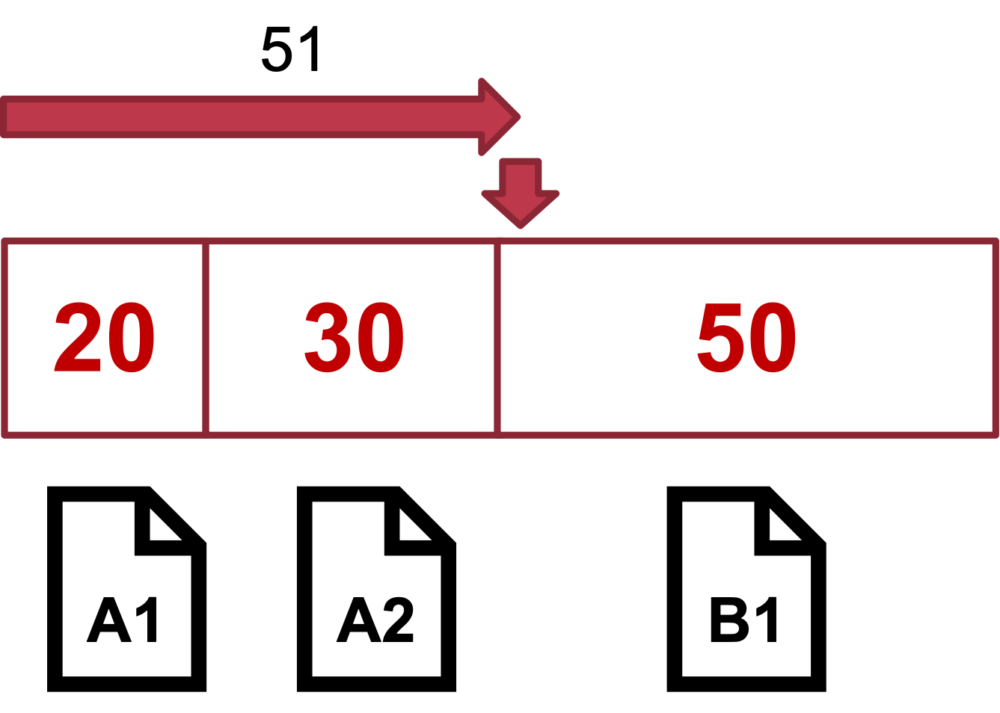
- 好处：简单
- 问题：不精确（伪随机），各个任务对 CPU 时间的占比会有误差
8. 步幅调度 (Stride Scheduling)
- Stride：步幅，任务一次执行增加的虚拟时间
- 是一个足够大的整数，可以设为所有 tickets 的最小公倍数
- 虚拟时间：物理时间除以任务对应的 ticket，大小表示 CPU 资源的相对使用情况
- Pass：累计执行的虚拟时间
- 规则：每次调度时，挑选 Pass 最小的任务
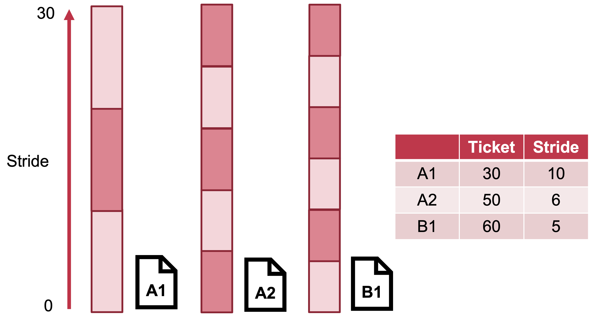
多核调度策略 (Multicore Scheduling Policy)
-
全局运行队列：所有 CPU 共享同一个全局运行队列
- 问题：
- 多个 CPU 对全局调度器的访问产生锁竞争
- 同一个线程可能在不同 CPU 上切换：切换开销大（Cache 和 TLB）、缓存局部性差
- 问题：
-
本地运行队列：每个 CPU 核心维护本地运行队列
- 现被应用于 Linux、ChCore 等操作系统中
- 问题：负载不均衡
-
负载均衡：尽可能让每个 CPU 都同等忙碌
- 需要追踪 CPU 的负载情况，将任务从负载高的 CPU 迁移到负载低的 CPU
-
亲和性：尽量让一个进程调度到同一个 CPU 上运行，以发挥 CPU 中 Cache 的作用
- 通过操作系统暴露的任务亲和性接口，可以指定任务能够使用的 CPU 核心
Linux 调度器
Linux 为了满足不同需求，提供了多种调度策略。下面以 Linux 两种调度器为例，每种调度器都对应多个调度策略。
-
Linux Real-Time Scheduler：使用 Multi-level Queue 优先级调度
- 每个任务有自己的优先级、具体策略
-
Linux Complete Fair Scheduler：通过调整任务每次执行的时间，达成公平共享的方式
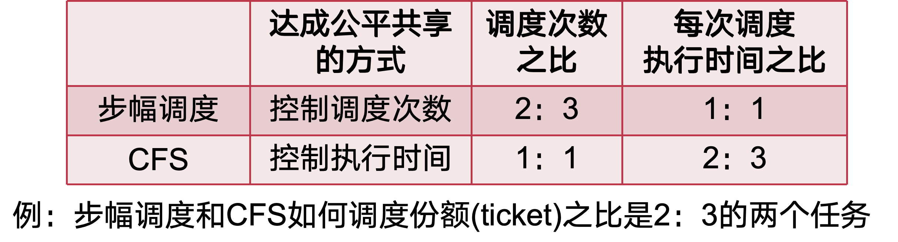
Lecture 12: 进程间通信
IPC 基础
-
IPC 的消息接口：
- 发送消息：
Send(message) - 接收消息：
Recv(message) - 远程方法调用：
RPC(req_message, resp_message)- 相当于在发送消息后，等待一个返回消息
- 远程方法调用的回复：
Reply(resp_message)
- 发送消息：
-
IPC 的两个阶段：
- 准备阶段：建立通信连接，即进程间的信道
- 通信阶段：
- 数据传递：以消息接口为例，通信数据抽象为消息，通常包含头部和数据内容
- 通信机制：在新的数据或消息到来时通知接收方
-
数据传递的两种方法：
- 基于共享内存的数据传递：OS 在通信过程中不干预数据传输，仅负责准备阶段的映射
- 无需切换到内核态即可完成 IPC（多核场景下）
- 完全由用户态控制，定制能力更强
- 可实现零内存拷贝（无需内核介入）
- 基于操作系统辅助的数据传递：OS 提供接口（系统调用），通过内核态内存来传递数据，无需在用户态建立共享内存
- 抽象更简单，用户态直接调用接口，使用更方便
- 安全性保证更强，发送者在消息被接收时通常无法修改消息
- 多方（多进程）通信时更灵活、更安全
- 基于共享内存的数据传递：OS 在通信过程中不干预数据传输，仅负责准备阶段的映射
-
两种通知机制：
- 基于轮询：轮询内存数据检查是否有消息到来
- 缺点：大量 CPU 计算资源的浪费
- 基于控制流转移：由内核控制进程的运行状态
- 优点：进程只有在条件满足的情况下才运行，避免 CPU 浪费
- 基于轮询：轮询内存数据检查是否有消息到来
-
IPC 控制流：同步和异步
- 同步 IPC：IPC 操作会阻塞调用者进程直到操作完成
- 调用者继续运行时，返回结果已经 ready
- 异步 IPC：进程发起 IPC 操作后即可返回而不需要等待其完成
- 通过轮询或回调函数（需内核支持）来获取返回结果
- 同步 IPC：IPC 操作会阻塞调用者进程直到操作完成
-
IPC 的超时机制：
- 应用可自行设置超时的阈值，但如何选择合适的阈值却很难
- 特殊的超时机制：阻塞、立即返回（要求被调用者处于可立即响应的状态）
-
IPC 的权限检查：
- 宏内核：通常基于权限检查的机制实现
- 如 Linux 中与文件的权限检查结合在一起
- 微内核：通常基于 Capability 安全检查机制实现
- Capability 保存在内核中，与进程绑定
- 进程发起 IPC 时，内核检查其是否拥有对应的 Capability
- 宏内核：通常基于权限检查的机制实现
-
不同的 IPC 机制：

共享内存: 内存接口 IPC
共享内存为两个（或多个）进程在它们的虚拟地址空间中映射了同一段物理内存。
- 基础实现：
- 共享区域：共享区域容量、共享状态
1
2
3
4
5
6
7
8
9
10
11
12
13#define BUFFER_SIZE 10
// 消息抽象，即缓冲区中的元素
typedef struct {
struct msg_header header;
char data[0];
} item;
// 共享数据区域，容量为 10
item buffer[BUFFER_SIZE];
// 共享状态
volatile int buffer_write_cnt = 0;
volatile int buffer_read_cnt = 0;
volatile int empty_slot = BUFFER_SIZE;
volatile int filled_slot = 0;- 发送者(生产者)：在缓冲区上产生新的数据
1
2
3
4
5
6
7
8
9
10
11// Produce an item/msg
int send(item msg)
{
while (empty_slot == 0)
; // do nothing -- no free buffers
empty_slot--;
buffer[buffer_write_cnt] = msg;
buffer_write_cnt = (buffer_write_cnt + 1) % BUFFER_SIZE;
filled_slot++;
...
}- 接收者(消费者)：从缓冲区中获取数据
1
2
3
4
5
6
7
8
9
10item recv(void)
{
while (filled_slot == 0)
; // do nothing -- nothing to consume
filled_slot--; // remove an item from the buffer
item = buffer[buffer_read_cnt];
buffer_read_cnt = (buffer_read_cnt + 1) % BUFFER SIZE;
empty_slot++;
return item;
} - 共享内存的问题：
- 缺少通知机制：
- 若轮询检查，则导致 CPU 资源浪费
- 若周期性检查，则可能导致较长的等待时延
- 根本原因：共享内存的抽象过于底层；缺少 OS 更多支持
- TOCTTOU （Time-of-check to Time-of-use）问题：
- 当接收者直接用共享内存上的数据时，可能存在被发送者恶意篡改的情况
- 这可能导致 buffer overflow 等问题
- 缺少通知机制：
消息队列: 消息接口 IPC
-
消息队列：一种消息传递机制，属于间接通信
- 发送和接收的接口是内核提供的
- 信箱是内核中维护的消息队列结构体
- 有缓存，没有超时机制，支持异步通信（非阻塞）
- 支持多个发送者和接收者同时存在
-
消息队列的结构：在内核中的表示是队列，以链表的方式组织消息
- 任何有权限的进程都可以访问队列（写入或者读取）
- 消息的格式：类型（整型）+ 数据，允许按照类型进行消息查询
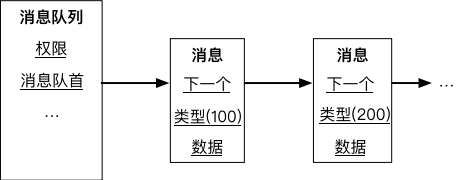
- 基本操作：
msgget()：获取已有消息队列的连接，或创建一个新的消息队列msgctl()：控制和管理消息队列，如修改消息队列的权限信息或删除该消息队列msgsnd()：向消息队列发送消息msgrcv()：从消息队列接收消息
轻量级远程方法调用 (LRPC)
-
核心思想：
- 传统思路：将需要处理的数据发送到另一个进程处理，这使得控制流转换和数据传输成为主要瓶颈
- LRPC 的思路：将另一个进程处理数据的代码拉到当前进程，以避免控制流切换和数据传输，从而优化 IPC 性能
-
控制流转换：
- 问题：需要下陷到内核，内核调度会导致不确定时延
- 即 Client 和 Server 之间可能会执行多个不相关进程
- 解决方法：将 Client 运行在 Server 的上下文
- 只切换地址空间、权限表等状态，不做调度和线程切换
- 问题：需要下陷到内核，内核调度会导致不确定时延
-
数据传输：
- 问题：经过内核的传输经历两次拷贝，即 Client → 内核 → Server
- 数据拷贝很慢（内存指令），并且不可扩展（数据量增大，时延增大）
- 解决方法：共享参数栈和寄存器
- 参数栈 (A-stack)：系统内核为每一对 LRPC 连接预先分配好一个 A-stack
- A-stack 被同时映射在 Client 进程和 Server 进程地址空间
- Client 进程只需要将参数准备到 A-stack 即可，不需要内核额外拷贝
- 共享寄存器：直接使用当前的通用寄存器，类似函数调用中用寄存器传递参数
- 参数栈 (A-stack)：系统内核为每一对 LRPC 连接预先分配好一个 A-stack
- 问题：经过内核的传输经历两次拷贝，即 Client → 内核 → Server
-
通信连接建立：
- Server 进程通过内核注册一个服务描述符，对应 Server 进程内部的一个处理函数
- 内核为服务描述符预先分配好参数栈及连接记录，连接记录用于从 Server 进程处返回（类似栈）
- 内核返回给 Client 一个绑定对象，作为成功建立连接的标志
- 后续 Client 通过绑定对象发起通信
-
通信过程：
- 内核验证绑定对象的正确性，并找到正确的服务描述符
- 内核验证参数栈和连接记录
- 检查是否有并发调用 (可能导致 A-stack 等异常)
- 将 Client 的返回地址和栈指针放到连接记录中
- 将连接记录放到线程控制结构体中的栈上 (支持嵌套 LRPC 调用)
- 找到 Server 进程的 E-stack (执行代码所使用的栈)
- 将当前线程的栈指针设置为 Server 进程的运行栈地址
- 将地址空间切换到 Server 进程中
- 执行 Server 地址空间中的处理函数
Binder IPC
- Binder IPC：兼具 IPC 数据传输的高性能与高安全
- 框架层 Binder 服务框架：发现服务，接口封装
- 内核层 Binder 驱动：提供内核层 IPC 能力
- 数据传输：通过内存映射减少 IPC 数据拷贝
- 内核发送/接收缓冲区、接收端缓冲区映射到同一块物理内存
- 发送端一次数据拷贝，接受端零次数据拷贝
- 数据序列化：内核辅助完成特殊对象传输
- 问题：复杂数据结构无法直接跨进程传输，如嵌套数据结构、指针、文件描述符等
- 解决方法：内核使用偏移数据定位特殊对象位置，并帮助接收端进程重构特殊对象
- 线程池模型：内核动态创建服务线程
- 问题：一个 IPC Server 可能处理大量 Client 请求
- 少量服务线程 -> 无法应对高负载任务
- 大量服务线程 -> 低负载时浪费资源
- 解决方法：内核默认从服务线程池挑选处理线程，服务线程不足自动创建
- 问题：一个 IPC Server 可能处理大量 Client 请求
Lecture 13: 同步原语
并发带来的同步问题
-
竞争条件 (Race Condition)：
- 当 2 个或以上线程同时对共享的数据进行操作，其中至少有一个写操作
- 该共享数据最后的结果依赖于这些线程特定的执行顺序
-
临界区 (Critical Section)：任意时刻，有且只有一个线程可以进入临界区执行
-
实现临界区抽象的三个要求：
- 互斥访问：在同一时刻，有且仅有一个线程可以进入临界区
- 有限等待：当一个线程申请进入临界区之后，必须在有限的时间内获得许可进入临界区而不能无限等待
- 空闲让进：当没有线程在临界区中时，必须在申请进入临界区的线程中选择一个进入临界区，保证执行临界区的进展
四种同步原语
- 同步原语 (Synchronization Primitives)：OS 提供的用于帮助开发者实现线程之间同步的软件工具
- 在有限的共享资源上正确的协同工作
互斥锁 (Mutual Exclusive Lock)
- 互斥锁的作用：保证对共享资源的互斥访问
- 互斥锁接口：
Lock(lock)：尝试拿到锁lock- 若当前没有其他线程拿着
lock，则拿到lock，并继续往下执行 - 若
lock被其他线程拿着，则不断循环等待放锁（busy loop）
- 若当前没有其他线程拿着
Unlock(lock)：释放锁
- 使用示例：
- 解决多生产者消费者问题：
1
2
3
4
5
6
7
8
9while (prodCnt - consCnt == BUFFER_SIZE)
; /* do nothing -- no free buffers */
// 申请进入临界区
lock(&buffer_lock);
// 临界区
buffer[prodCnt % BUFFER_SIZE] = item;
prodCnt = prodCnt + 1;
// 通知离开临界区
unlock(&buffer_lock);- 解决多线程计数问题：
1
2
3
4
5
6
7
8
9unsigned long a = 0;
void *routine(void *arg) {
for (int i = 0; i < 1000000000; i++) {
pthread_mutex_lock(&global_lock);
a++;
pthread_mutex_unlock(&global_lock);
}
return NULL;
}
条件变量 (Condition Variable)
- 条件变量的作用：提供线程的睡眠与唤醒机制
- 避免无意义的等待，让 OS 调度器调度其他任务执行
- 条件变量接口：
- 等待：
void cond_wait(struct cond *cond, struct lock *mutex);- 放入条件变量的等待队列
- 阻塞自己同时释放锁，即调度器可以调度到其他线程
- 被唤醒后重新获取锁
- 等待需要在临界区中
- 唤醒：
void cond_signal(struct cond *cond);- 检查等待队列
- 如果有等待者则移出等待队列并唤醒
- 唤醒也需要在临界区中
- 等待：
- 使用示例：多生产者消费者问题
- 消费者：
1
2
3
4
5
6/* Wait empty slot */
lock(&empty_cnt_lock);
while (empty_slot == 0)
cond_wait(&empty_cond, &empty_cnt_lock);
empty_slot--;
unlock(&empty_cnt_lock);- 生产者：
1
2
3
4
5/* Add empty slot */
lock(&empty_cnt_lock);
empty_slot++;
cond_signal(&empty_cond);
unlock(&empty_cnt_lock);
信号量 (Semaphore)
- 信号量的作用：协调（阻塞/放行）线程对有限数量资源的消耗与释放
- 信号量的值
cnt记录了当前可用资源的数量
- 信号量的值
- 信号量原语：
- P 操作：消耗资源
1
2
3
4
5void sem_wait(sem_t *sem) {
while(sem->cnt <= 0)
; /* Waiting */
sem->cnt--;
}- V 操作：增加资源
1
2
3void sem_signal(sem_t *sem) {
sem->cnt++;
} - 使用示例：多生产者消费者问题
- 生产者：
1
2
3
4
5
6void producer(void) {
new_msg = produce_new();
sem_wait(&empty_slot_sem); // 消耗 empty_slot
buffer_add(new_msg);
sem_signal(&filled_slot_sem); // 增加 filled_slot
}- 消费者：
1
2
3
4
5
6void consumer(void) {
sem_wait(&filled_slot_sem); // 消耗 filled_slot
cur_msg = buffer_remove();
sem_signal(&empty_slot_sem); // 增加 empty_slot
handle_msg(cur_msg);
} - 信号量的分类：
- 二元信号量：初始化的资源数量为 1
- 其计数器只有可能为 0、1 两个值
- 同一时刻只有一个线程能够拿到资源
- 计数信号量：初始化的资源数量大于 1
- 同一时刻可能有多个线程能够拿到资源
- 二元信号量：初始化的资源数量为 1
读写锁
- 读写锁的作用：允许读者线程并行读取共享资源
- 区分读者与写者，允许读者之间并行，读者与写者之间互斥
- 使用示例：读者写者问题
1
2
3
4
5
6
7
8
9
10
11
12
13
14struct rwlock *lock;
char data[SIZE];
void reader(void) {
lock_reader(lock);
read_data(data);
unlock_reader(lock);
}
void writer(void) {
lock_writer(lock);
update_data(data);
unlock_writer(lock);
}
死锁
死锁产生的原因
- 互斥访问：同一时刻只有一个线程能够访问
- 持有并等待：一直持有一部分资源并等待另一部分，不会中途释放
- 资源非抢占：即进程 B 不会抢进程 A 已经持有的锁
- 循环等待：存在一种进程资源的循环等待链（A 等 B，B 等 A）
死锁的检测与恢复
- 资源分配图：
- 进程结点：对应一个进程
- 资源结点：对应一类资源（一类资源可能有多个）
- 请求边 (进程结点 --> 资源结点)：表示进程想申请几个资源（每条边代表一个）
- 分配边 (资源节点 --> 进程结点)：表示已经为进程分配了几个资源（每条边代表一个）

- 死锁的检测：在资源分配图中找到环（循环等待），表明存在死锁
- 死锁的恢复：
- 方法 1：终止环中的任一线程，检查是否仍然有环，如果有则重复该操作
- 方法 2：让环上所有进程回滚到之前的某一状态
死锁预防
- 避免互斥访问：通过其他手段，如代理执行
- 只有代理线程能够访问共享资源，避免数据竞争
- 发送修改请求，由代理线程统一执行
- 不允许持有并等待：一次性申请所有资源
trylock接口：非阻塞，立即返回成功或失败- 活锁问题：会导致活锁问题，但活锁可能自己恢复
- 资源允许抢占：需要考虑如何恢复
- 要让线程 A 正确回滚到拿锁 A 之前的状态
- 打破循环等待：按照特定顺序获取资源
- 对所有资源进行编号，让所有线程递增获取
- 任意时刻，获取最大资源号的线程可以继续执行，然后释放资源
死锁避免
- 银行家算法：所有线程获取资源需要通过管理者同意，管理者预演会不会造成死锁
- 如果会造成：阻塞线程，下次再给
- 如果不会造成：给线程该资源
- 安全状态与非安全状态：对于一组线程 {P1, P2, … , Pn}：
- 安全状态：能找出至少一个执行序列，如 P2->P1->P5…，让所有线程需求得到满足
- 非安全状态：不能找出这个序列，必定会导致死锁
- 银行家算法通过安全性检查算法，保证系统一直处于安全状态，且按照这个序列执行
- 安全性检查：
- 四个数据结构：
M个资源，N个线程- 全局可利用资源：
Available[M] - 每线程最大需求量：
Max[N][M] - 已分配资源：
Allocation[N][M] - 还需要的资源：
Need[N][M]
- 全局可利用资源：
- 检查步骤：
- 检查当前的剩余可用资源是否能满足某个进程的最大需求，如果可以，就把该进程加入安全序列，并把该进程持有的资源全部回收
- 不断重复上述过程，看最终是否能让所有进程都加入安全序列
- 四个数据结构：
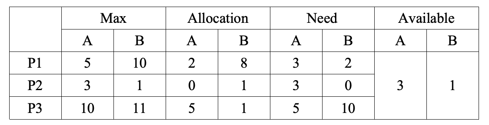
Lecture 14: 同步原语的实现
互斥锁实现：基于硬件原子指令
-
使用
Test-and-Set指令实现互斥锁：1
2
3
4
5int TestAndSet(int *old_ptr, int new) {
int old = *old_ptr; // fetch old value at old_ptr
*old_ptr = new; // store 'new' into old_ptr
return old; // return the old value
}1
2
3
4
5
6
7
8
9
10
11
12
13
14
15
16
17typedef struct __lock_t {
int flag;
} lock_t;
void init(lock_t *lock) {
// 0 indicates that lock is available, 1 that it is held
lock->flag = 0;
}
void lock(lock_t *lock) {
while (TestAndSet(&lock->flag, 1) == 1)
; // spin-wait (do nothing)
}
void unlock(lock_t *lock) {
lock->flag = 0;
} -
使用
Compare-and-swap指令实现互斥锁：1
2
3
4
5
6int CompareAndSwap(int *ptr, int expected, int new) {
int actual = *ptr;
if (actual == expected)
*ptr = new;
return actual;
}1
2
3
4
5
6
7
8void lock(lock_t *lock) {
while (CompareAndSwap(&lock->flag, 0, 1) == 1)
; // spin-wait (do nothing)
}
void unlock(lock_t *lock) {
lock->flag = 0;
} -
使用
Load-linked&Store-conditional指令实现互斥锁：1
2
3
4
5
6
7
8
9
10
11
12int LoadLinked(int *ptr) {
return *ptr;
}
int StoreConditional(int *ptr, int value) {
if (no one has updated *ptr since the LoadLinked to this address) {
*ptr = value;
return 1; // success!
} else {
return 0; // failed to update
}
}1
2
3
4
5
6
7
8
9
10
11
12
13void lock(lock_t *lock) {
while (1) {
while (LoadLinked(&lock->flag) == 1)
; // spin until it's zero
if (StoreConditional(&lock->flag, 1) == 1)
return; // if set-it-to-1 was a success: all done
// otherwise: try it all over again
}
}
void unlock(lock_t *lock) {
lock->flag = 0;
} -
使用
Fetch-and-add指令实现互斥锁：1
2
3
4
5int FetchAndAdd(int *ptr) {
int old = *ptr;
*ptr = old + 1;
return old;
}- 排号锁（Ticket Lock）：通过遵循竞争者到达的顺序来传递锁
owner：表示当前的持有者next：表示目前放号的最新值
1
2
3
4
5
6
7
8
9
10
11
12
13
14
15
16
17
18
19typedef struct __lock_t {
int ticket;
int turn;
} lock_t;
void lock_init(lock_t *lock) {
lock->ticket = 0;
lock->turn = 0;
}
void lock(lock_t *lock) {
int myturn = FetchAndAdd(&lock->ticket);
while (lock->turn != myturn)
; // spin
}
void unlock(lock_t *lock) {
lock->turn = lock->turn + 1;
}
条件变量的实现
-
条件变量的实现（语义级）：需要操作系统辅助实现
- 等待的接口：
void wait(struct cond *cond, struct lock *mutex);- 放入条件变量的等待队列：
list_append(cond->wait_list, proc_self()); - 阻塞自己同时释放锁：
unlock(mutex), yield() - 被唤醒后重新获取锁：
lock(mutex);
- 放入条件变量的等待队列：
- 唤醒的接口：
void signal(struct cond *cond);- 检查等待队列：
if (!list_empty(cond->wait_list)) - 如果有等待者则移出等待队列并唤醒：
wakeup(list_remove(cond->wait_list));
- 检查等待队列：
- 等待的接口：
-
丢失唤醒：必须原子地完成挂起和放锁，否则会有丢失唤醒问题
- 可能存在其他线程在放锁和挂起的间隙调用唤醒操作，导致唤醒丢失
信号量的实现
-
非阻塞信号量的实现：
1
2
3
4
5
6
7
8
9
10
11
12
13
14
15void wait(sem_t *S) {
lock(&S->sem_lock);
while(S->value == 0) {
unlock(&S->sem_lock);
lock(&S->sem_lock);
}
S->value --;
unlock(&S->sem_lock);
}
void signal(sem_t *S) {
lock(&S->sem_lock);
S->value ++;
unlock(&S->sem_lock);
} -
阻塞信号量的实现：
1
2
3
4
5
6
7
8
9
10
11
12
13
14
15
16
17
18
19
20
21void wait(sem_t *S) {
lock(S->sem_lock);
S->value --;
if (S->value < 0) {
do {
cond_wait(S->sem_cond, S->sem_lock);
} while (S->wakeup == 0);
S->wakeup --;
}
unlock(S->sem_lock);
}
void signal(sem_t *S) {
lock(S->sem_lock);
S->value ++;
if (S->value <= 0) {
S->wakeup ++;
cond_signal(S->sem_cond);
}
unlock(S->sem_lock);
} -
实现说明：
value：正数为信号量，负数为有人等待wakeup：有线程等待时的可用资源数量，即应当唤醒的线程数量- 某一时刻真实的资源数：
value < 0 ? wakeup : value + wakeup
读写锁的实现
-
读写锁的偏向性：有读者在临界区，有新的写者在等待，另一个读者能否进入临界区
- 不能（偏向写者的读写锁）；后序读者必须等待写者进入后才进入；更加公平
- 能（偏向读者的读写锁）：后序读者可以直接进入临界区；更好的并行性
-
偏向读者的读写锁的实现：

- 实现说明：
reader计数器：表示有多少读者- 第一个/最后一个 reader 负责获取/释放写锁
- 只有当完全没有读者时，写者才能进入临界区
同步原语案例分析
同步案例1：多线程执行屏障
- 多线程执行屏障，等待全部执行到屏障后再继续执行
- 符合场景2：线程等待/唤醒
1 | |
同步案例2：等待队列工作窃取
- 每核心等待队列，在空时允许窃取其他核心的任务
- 符合场景1：共享资源互斥访问
1 | |
同步案例3：map-reduce
-
Word-count：大文本拆分字数统计
- Mapper：统计一部分文本自述
- Reducer：一旦其中任意数量的 Mapper 结束，就累加其结果
-
符合场景2：线程等待/唤醒
1 | |
- 也符合场景3：将 Mapper 的结果视为资源
1 | |
同步案例4：网页渲染
- 网页等待所有的请求均完成后再进行渲染
- 场景2：等待/唤醒
1 | |
- 场景3：视为所有请求结果为资源
1 | |
同步案例5：线程池并发控制
- 控制同一时刻可以执行的线程数量（有的线程阻塞时可以允许新的线程替上）
- 例如，允许同时三个线程执行
- 场景3：视剩余可并行执行线程数量为有限资源
1 | |
同步案例6：网页服务器
- 处理响应客户端获取静态网页需求，处理后端更新静态网页需求，不允许读取更新到一半的页面
- 衍生场景1：读写场景，可以使用读写锁
- client 用读锁，后端用写锁
同步原语选择的参考原则
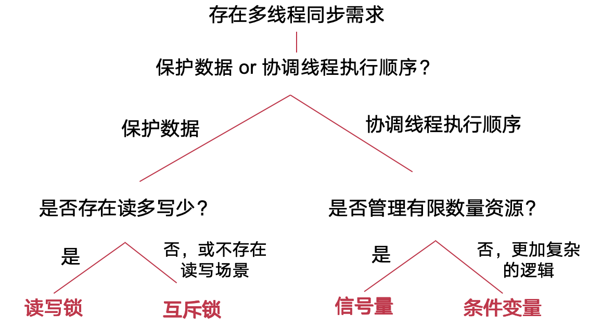
Lecture 15: 文件系统
Inode
-
inode：即 index node，记录文件多个磁盘块的位置
- 每个文件对应一个 inode，称为文件元数据
- 记录了多个磁盘块号；头部记录文件 size 信息
-
inode 文件系统的存储布局：
- 超级块：是整个文件系统的元数据
- 记录磁盘块的大小、其他信息的起始磁盘块位置，等等
- inode 分配信息（位图）：记录哪些 inode 已分配，哪些空闲
- inode 表：记录所有 inode
- 每个 inode 使用 inode 号作为索引
- 此时，inode 号即为文件名
- 超级块：是整个文件系统的元数据

-
inode 文件系统的基本操作：
- 加载文件系统：首先读取超级块，然后找到其他信息
- 创建新文件：
- 根据 inode 分配信息找到空闲 inode，将 inode 对应的 bit 设置为 1
- 返回 inode 在 inode 表中的索引，作为文件名
- 查找文件（根据 inode 号）：在 inode 表中根据 inode 号定位该 inode
- 删除文件：在 inode 分配表中，将该 inode 对应的 bit 设置为 0
-
多级 inode：解决单级 inode 过大的问题，一个多级 inode 占用的空间很少
- 索引块指向数据块；二级索引块指向索引块；以此类推
- 索引块（包括二级索引块）不在 inode 表的存储区域，而是在数据区域

目录
- 目录文件：记录字符串到 inode 号的映射，实现了字符串的文件名
- 目录中的每条映射称为一个目录项
- 目录本身也是一个文件，同样有 inode
- 目录文件的大小与其记录的文件大小无关
- 支持查找操作：给定一个目录文件和字符串，返回对应的 inode

-
目录的递归：
- 目录中可以记录子目录，因为目录本身也是一个文件
- 通过“/”来分割父目录和子目录
- 最顶端的目录没有文件名，被称为“根目录”（root）
- 目录中可以记录子目录，因为目录本身也是一个文件
-
文件的查找过程：以
/os-book/fs.tex为例
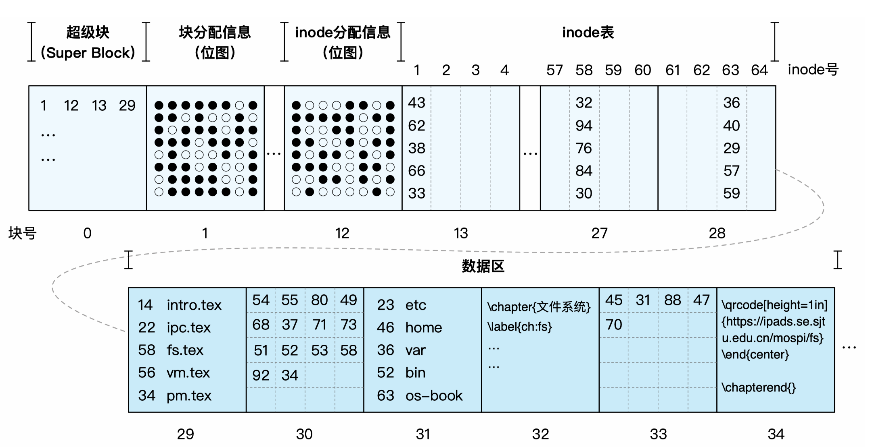
硬链接与软链接
（硬）链接：Link
LINK：创建（硬）链接，如 Linux 中的ln命令- 不同的文件名指向同一个 inode 号
- 将严格的层次结构（树）变成有向图
- 不允许出现环（除了
.和..） - 用户不能为目录创建 Link，否则会出现环
- 不允许出现环（除了
UNLINK：删掉从文件名到 inode 号的绑定关系- 如果
UNLINK最后一个绑定，则把 inode 和对应的 blocks 放到 free-list - 每个文件都需要一个引用计数器（Reference count）
LINK时 +1,UNLINK时 -1- 当 reference count 为 0 时，文件被删除
- 如果
软链接（符号链接）
-
Link 的问题：无法在一个磁盘上建立指向另一个磁盘的 Link，因为不同磁盘的 inode 命名空间是不同的
-
软链接（符号链接）:
SYMLINK，如 Linux 中的ln -s命令- 是一个独立的文件，有自己的文件名和 inode
- 增加一种新的 inode 类型，其中直接存储了路径字符串
- 既可以对文件链接，也可以对目录链接
-
硬链接和软链接的对比：

文件系统 API
-
两类元数据：
- 磁盘上文件的元数据：静态的、在磁盘中
- 拥有者/所在组 ID：拥有该 inode 的用户 ID 和组 ID
- 权限的类型：拥有者、所在组、其他；读、写、执行
- 时间戳：最后一次访问；最后一次修改；最后一次 inode 更新
- 被打开文件的元数据：动态的、在内存中
- 整个系统维护了一个
file_table，记录了所有打开的文件的信息- 包括：文件游标（file cursor）、引用数（ref_count）
- 父子进程间可以共享文件游标
- 每个进程维护了一个
fd_table，记录了该进程每个fd所对应文件在file_table中的索引
- 整个系统维护了一个
- 磁盘上文件的元数据：静态的、在磁盘中
-
文件游标 Cursor：记录了一个文件中下一次操作的位置
- 可以通过
SEEK操作修改；读写共享文件游标 - 共享游标: 允许父子进程共享同一个文件，父进程将
fd传递给子进程 - 非共享游标: 两个不同的进程打开同一个文件
- 可以通过
-
close()：- 释放
fd_table中的相关项 - 减小
file_table中相关项的refcnt- 如果
file_table中相关项refcnt为 0，则将其释放
- 如果
- 释放
-
write()：- 可能需要分配新的 block
- 更新 inode 的 size 和 mtime
read()也有写操作，需要更新最后一次访问时间
-
删除一个打开的文件：inode 引用数变成 0，但不会被立即释放和删除，直到前一个进程调用
close将其关闭 -
fsync()：- Block cache：缓存了最近被使用的磁盘块
- 推迟数据向磁盘的写入，寻求机会批量写入，提升性能
- 问题：如果在写入前发生故障，可能会造成不一致
SYNC：保证对文件的所有修改被写入到存储设备
- Block cache：缓存了最近被使用的磁盘块
文件系统的崩溃一致性
-
文件系统的崩溃一致性：文件系统中的各种数据结构存在依赖关系与一致性要求，崩溃可能会造成这些一致性被打破
-
方法1：同步元数据写 +
fsck- 同步元数据写：每次元数据写入后，运行
sync()保证更新后的元数据入盘 fsck：非正常重启后，运行fsck检查磁盘的一致性关系- 问题：太慢
fsck时间与磁盘的大小成比例增长- 同步元数据写导致创建文件等操作非常慢
- 同步元数据写：每次元数据写入后，运行
-
方法2：日志（Journaling）
- 日志的记录方法：
- 在进行修改之前，先将修改记录到日志中
- 所有要进行的修改都记录完毕后，COMMIT 日志
- 确定日志落盘后，再修改数据和元数据
- 修改完成后，删除日志
- 崩溃后的恢复方法：
- 启动后首先检查日志区域
- 若没有任何日志记录，则无需恢复
- 扫描所有已经 COMMIT 的事务
- 若没有 COMMIT 的事务，则无需恢复
- 对已经 COMMIT 的事务，将元数据从日志区写到原本位置
- 完成后清空日志区域
- 启动后首先检查日志区域
- 日志的记录方法：
Lecture 16: 设备管理与驱动
-
OS 的分层设计：应用 I/O 框架层、设备管理的共性功能层、设备驱动层
-
设备最基本的抽象：将设备的外部接口设计为一组寄存器，称为设备寄存器
-
I/O 子系统的目标：
- 提供统一接口，涵盖不同设备
- 设备代码（即驱动程序）需要实现标准接口
- 提供 I/O 硬件的抽象层
- 管理硬件资源；隐藏硬件细节
- 提供统一接口，涵盖不同设备
-
设备驱动：
- 内核中设备特定代码，和硬件设备直接交互
- 提供标准的文件系统接口
- 内核 I/O 子系统可以和内核不同驱动交互
- 可借助
ioctl()系统调用进行设备相关配置
- Linux 的设备驱动通常分为两部分
- 上半部：迅速处理；关中断状态，没有嵌套
- 下半部：延后处理；开中断状态，可能发生嵌套
- 内核中设备特定代码，和硬件设备直接交互
I/O 设备分类
- 字符设备
- 例子：键盘/鼠标，串口，部分 USB 设备等
- 特点：串行访问，每次一个字符
- 交互方式：
- I/O 命令：如
get(),put()等 - 文件系统接口：如
open(),read(),write(),close()
- I/O 命令：如
- 块设备
- 例子：磁盘、磁带、DVD
- 交互方式：
- 统一的块 I/O 接口：以块为粒度访问数据
- 原始 I/O 接口或文件形式访问：获得字节流
- 以内存映射文件的方式访问：即 Memory-Mapped File
- 网络设备
- 例子：以太网卡、无线网络、蓝牙等
- 不同于块设备、字符设备，网络设备有自己的接口
传统 I/O 流程: 轮询与中断
-
传统 I/O 流程：
- Step 1：
1
2While(STATUS == BUSY)
; // 不断等待，直到设备不再忙碌- 轮询：CPU 反复读取设备的状态寄存器，直到确认设备可以接受新的命令
- Step 2：
1
Write data to DATA register and address to ADDRESS register- 如果设备是磁盘，则需要若干次写操作才能将磁盘块传输到设备中
- 当 CPU 参与数据的搬移时，称为 programmed I/O (PIO)
- Step 3：
1
2Write command to COMMAND register
// 此时设备开始工作，并执行 COMMAND 对应操作- OS 向设备的命令寄存器写入命令
- 设备获悉数据已经就绪，随即设备开始工作，执行 OS 发送的命令
- Step 4：
1
2While(STATUS == BUSY)
; // 再次等待，直到设备响应完请求- OS 再次通过不断轮询状态寄存器，判断设备是否完成工作
- 最后，OS 会收到设备返回的 success 或 failure 状态码
- Step 1：
-
中断：不需要轮询设备状态，提高 CPU 利用率
- OS 向设备发送一个请求，随后令 I/O 进程睡眠，切换到其他任务（此时进程处于 WAITING 状态）
- 设备完成 I/O 命令后，触发硬件中断
- CPU 跳转到 OS 预先注册好的中断处理程序 (Interrupt service routine / ISR)
- 中断处理程序运行在内核态，负责响应设备中断
- 例如，读取设备数据，或读取设备返回的状态码，进而唤醒等待 I/O 的进程，完成后续工作
- 局限性：只适用于慢速设备（如鼠标、键盘）
-
中断的活锁问题：快速设备（如网卡）可能频繁触发中断，导致 CPU 只顾着响应中断，无法调度用户进程和处理中断发来的数据
- 解决方案 1：合二为一（中断+轮询）
- 默认使用中断；中断发生后，使用轮询处理后续达到的网络包
- 如果没有更多中断，或轮询中断超过时间限制，则回到中断模式
- 该方案在 Linux 网络驱动中称为 NAPI (New API)
- 解决方案 2：中断合并（Interrupt Coalescing）
- 设备在发送中断前，需要等待一小段时间
- 在等待期间，其他中断可能也会马上到来，因此多个中断合并为同一个中断，进而降低频繁中断带来的开销
- 解决方案 1：合二为一（中断+轮询）
设备交互: PIO 与 MMIO
-
方法1：端口 I/O (Port I/O, PIO)
- 使用 I/O 端口对设备进行寻址
- I/O 端口：独立于物理地址空间的特殊地址空间
- 通过特殊的 I/O 指令进行读写，如 x86 的
IN和OUT指令 - 必须以特权模式执行，只有 OS 可以和直接和设备交互
- 使用 I/O 端口对设备进行寻址
-
方法2：内存映射 I/O（Memory-mapped I/O, MMIO）
- 将设备寄存器直接映射到物理地址空间
- 使用访存的
LOAD和STORE指令，直接访问设备寄存器- MMU 将虚拟地址转换为物理地址（即总线地址）
- I/O 模块负责将总线地址转换为设备的寄存器地址
- 可以以非特权模式下执行，ARM 和 x86 都支持
- MMIO 地址应使用
volatile关键字，防止编译器和 CPU 的错误优化 - 例子：DPDK 用户态网络栈，在用户态进行网络设备管理，减少数据拷贝，去除特权级切换，显著提升了网络性能
数据移动: DMA 与 IOMMU
直接内存访问 (Direct Memory Access, DMA)
-
工作流程：
- CPU 向磁盘控制器发送“读”指令，一次读取一大块数据
- “读”指令中包含了目标数据在内存中的地址
- 磁盘控制器将数据直接读取到磁盘的内存缓冲区
- 直接读取物理内存中的目标数据，不需要 CPU 的参与
- CPU 向磁盘控制器发送“读”指令，一次读取一大块数据
-
DMA 的优点：
- 减轻 CPU 负载：CPU 可以执行其他程序
- 减少传输次数：直接从设备传输到内存，不用经过 CPU
- 可以更好地支持“长消息”：需要总线支持
- 分摊总线协议开销：单次操作包括获取总线、传输、释放总线
-
DMA 的安全性问题：设备可通过 DMA 访问任意物理内存
IOMMU
- IOMMU：为 I/O 设备做地址翻译，避免设备直接使用物理地址访问内存
- 设备 DMA 使用 IOVA，由 IOMMU 翻译为 PA（实际的物理地址）
- 使用 IOTLB 优化 IOMMU 地址翻译流程
- 广泛用于 DMA 隔离：用户态驱动、虚拟化等
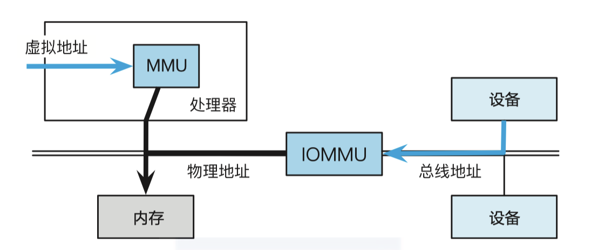
参考资料
本文参考上海交通大学并行与分布式系统研究所（IPADS）操作系统课程 CS3601 华志超老师的 PPT 课件整理。
部分图片来源于上海交通大学程序语言与编译原理课程 CS2612 曹钦翔老师的讲义。